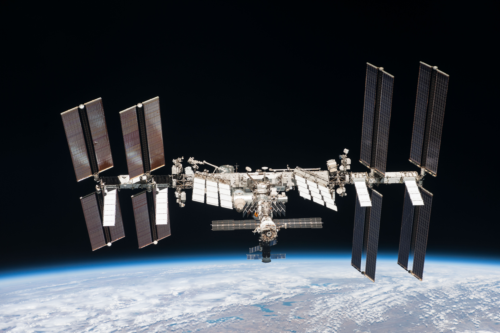
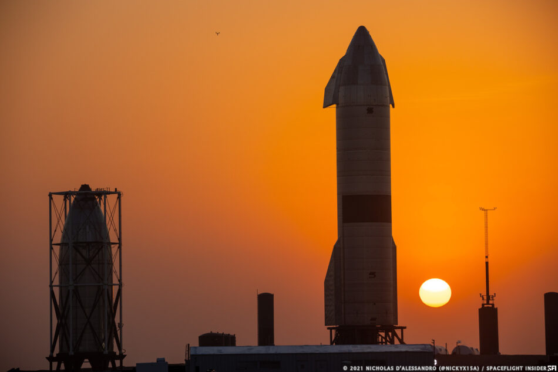
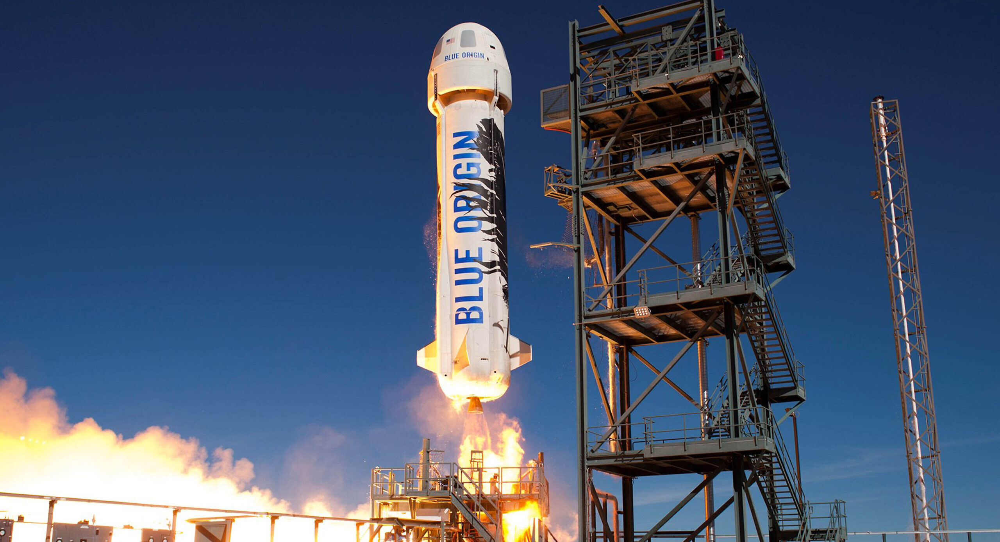

Spatium
Menu
Home
Lançamentos
Artigos
Contato

Conheça a ISS
Crew Dragon 1 e a ISS
Artigos
Vôo de 10 Km da Starship
Starlink

Vôo de 10 Km do SN15
Sucessor do Hubble?

Turismo Espacial
Crew 2 da SpaceX visita a ISS
Site desenvolvido com a intenção de aplicar conhecimentos de HTML, CSS e Js, afim de aprofundar a prática de semântica e responsividade.